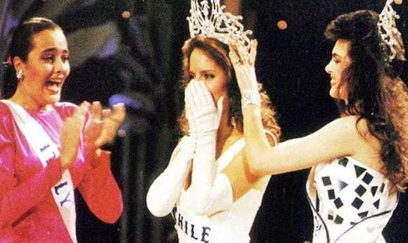

La ruta hacia el poder detrás de los concursos de belleza en Chile
En 1987, una joven de 22 años cambió para siempre la historia de los concursos de belleza en Chile. Al convertirse en la primera y única chilena en ganar Miss Universo, Cecilia Bolocco obtuvo mucho más que una corona: ingresó a un espacio de reconocimiento que la llevó a la televisión y al mundo empresarial.

Cecilia Bolocco al ganar la corona en 1987. Cecilia Bolocco actualmente.
Cecilia Bolocco actualmente.
Su historia marcó un antes y un después, pero también abrió una pregunta que pocas veces ha sido abordada. ¿Qué tienen en común las mujeres que han llegado a representar a Chile? Más allá del escenario, sus trayectorias parecen revelar que la corona no solo distingue a una ganadora, sino que también puede convertirse en la puerta de entrada a espacios de influencia y visibilidad.